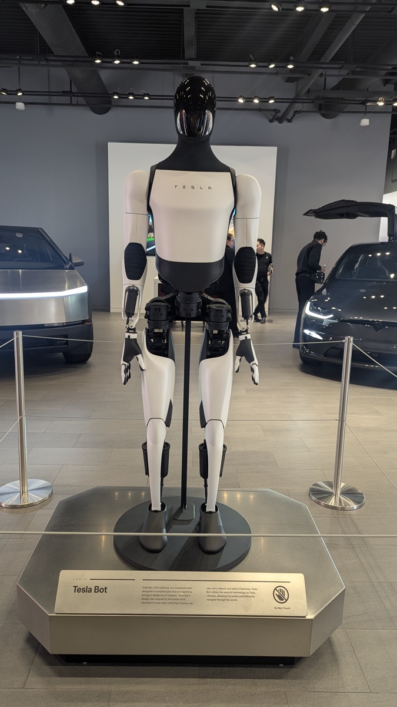
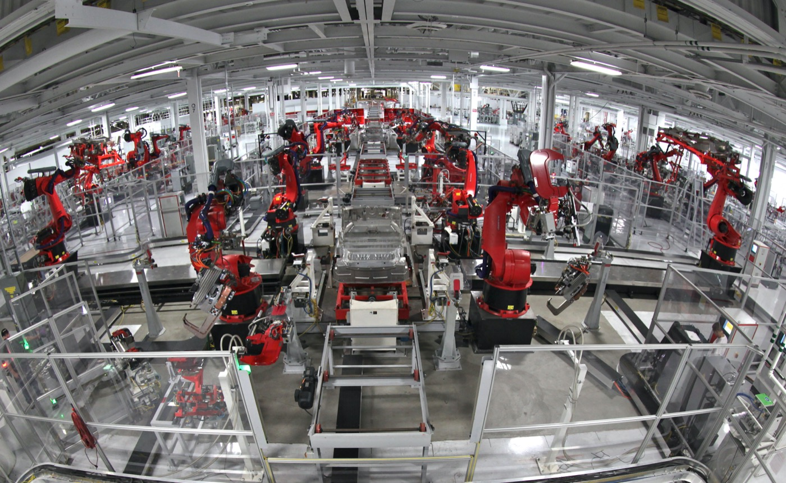

Executive Summary
This article reads the Optimus mass production announcement Tesla put out alongside its third-quarter results on October 21, 2026. The heart of it is that the robots coming off the high-volume line at the Fremont plant in California are the first Tesla has built to production quality.
The list of what that same announcement held back is longer. How fast the line runs, how many robots have come off it so far, what one costs, when a customer could buy one, and which generation is on the line were all left out. And in that same room Elon Musk said that getting the data to teach a robot its work means building 10,000 or 20,000 of them and having them play against themselves. The count Tesla needs it gave as a figure. The count Tesla has it did not give at all.
Sections 1 through 3 follow what is written in Tesla's third-quarter update, in the earnings call transcript, and in the reporting from that room. Sections 4 and 5, which read the undisclosed count as the denominator of the robot training data market, are this article's own.
Key numbers
The first two cover what Tesla did not say and what it said it needs. The last two cover the target rate and what happened to the financials while that target was being chased.
Sources: TechCrunch · Tesla North · Q3 earnings call transcript (October 21–22, 2026)
Five
Items the production announcement left blank
Production rate, cumulative count, price, customer sale date, generation in build. The California row of the factory table says 'Early Ramp' and nothing more
10,000–20,000
Robots Musk said the learning requires
Build that many, have them play against themselves, and the data accumulates, he said. A different number from the production rate target
20,000 a week
Annualized production rate target
Musk said getting there takes "at least a year, maybe a little longer"
43%
Fall in third-quarter net income
$787 million. The same quarter a year earlier was $1.37 billion
The Fremont Line Is Running, but Five Things Stay Undisclosed
On October 21, 2026 Tesla put out its third-quarter business update with one sentence in it. Optimus production has started on the high-volume line at Fremont, and what comes off that line is the first robot Tesla will call production quality. It also means that nothing built before it earns the label.

What gave up the floor space was the Model S and the Model X. Musk announced the end of both at the fourth-quarter earnings call on January 28, 2026, and the last cars left the line in the second quarter of 2026. The two debuted in 2012 and 2015 and sold about 750,000 between them. According to a time-lapse Tesla's manufacturing account posted on July 10, tearing that assembly line out took 46 days. Concrete trenches come up, robotic equipment goes out, rebar goes down on a new floor.

What the announcement did not say can be counted off a list. Tesla North named five items the announcement leaves unconfirmed: the production rate, the number built so far, the price, when customers can buy one, and which generation of Optimus Fremont is building. In the factory status table the California row reads 'Early Ramp' and the Texas row, where the second line will go, reads 'Construction.' The stage has a name. The number of units coming out of that stage does not.
The same table carries that number on its other rows. The vehicle lines each list an annual production capacity as a figure. The format for writing capacity down already sits inside that table, and only the two Optimus rows leave the cell empty.
There is not nothing to go on. Electrek reported that Tesla has pushed Optimus output up to a few hundred units a week. That is the outlet's estimate rather than a number Tesla confirmed, and even then it takes in earlier production that does not count as production quality. No official document carries a count.
Every Number Musk Gave Belongs to the Future
Musk handed out plenty of numbers on the call. Most of the equipment for a line designed at a million units a year is already inside Fremont, he said. On the annualized rate of 20,000 a week: "I would expect that it takes us probably at least a year, maybe a little longer to get to that annualized rate to get to 20,000 units a week." Deliveries to outside customers sit about a year out, late 2027, conditional on sorting out the AI architecture and the reliability and durability of the electromechanical design.
Outside Fremont the numbers get bigger. The second line going up on the north campus at Giga Texas aims at 10 million units a year, ten times the Fremont target, a figure Ashok Elluswamy, who leads Tesla's AI work, has confirmed publicly. When that rate arrives the company has never said, and in this quarter's factory table the Texas row still reads 'Construction.'
The outlook on speed is careful too. Of the early stretch of the S-curve Musk said it "has a shallow slope and is somewhat bumpy because it is such a radically new product." The biggest obstacle named was the hand. Konstantinos Laskaris, who leads Optimus engineering, said "the hand is one of the most challenging hardware areas actually," and Musk filled it in: "It's hard to make a hand that... can handle lots of wear and tear, but it's still squishy enough to pick up delicate objects and has all the sensors."
Line these numbers up and what they have in common is plain. None of them has been reached. The design capacity is a specification of the line, 20,000 a week is a target a year out, late 2027 is a delivery date. The only figure missing is the one that says how many robots are actually standing right now.
The financials for the same quarter moved the other way. Third-quarter net income was $787 million, down 43 percent from $1.37 billion in the same quarter a year earlier. Revenue was $28.04 billion against $28.09 billion a year ago, near enough to flat. Income got cut while revenue held still, and expanded spending on Optimus and AI accounts for much of that cost. How fast the money goes out gets filed every quarter. How many robots that money produced is not a filing item.
The direction of the spending is written out in some detail. Operating income was $718 million, down 56 percent, and operating margin fell from 5.8 percent a year ago to 2.6 percent. Research and development rose 69 percent to $2.8 billion, a large part of it. The numbers on the other side get written down too. Adjusted earnings per share came in at 48 cents against a market estimate of 45 cents, and free cash flow turned positive at $1.531 billion after a deficit the previous quarter. Whichever angle an investor reads this quarter from, there is a cell to look into.
The Count Is the Data, and Musk Said So First
That the number of robots sets the size of the training data is not a reading applied from outside. In the Q&A on this earnings call an analyst asked about exactly that: whether Optimus training data would be crowdsourced or come from Tesla's internal Optimus Academy, and whether data is the biggest bottleneck right now.
Musk's answer was that crowdsourcing is not the way. "Crowdsourcing is not the issue for Optimus," he said, and then put the requirement in figures: "We need to make, I think, on the order of 10,000 or 20,000 bots and then have them do self-play and we're building up an Optimus Academy." Ashok Elluswamy, who leads AI, described how the robot starts learning: "Optimus has to learn by watching other people do task initially and then start practicing the task yourself."
This is where cars and robots part. FSD has cars already out on the road bringing data back. Optimus has no such fleet. So gathering training data means building the robots first, and the number built becomes the total hours available for practice. That structure is what the count-as-denominator claim points at.
The two figures here are easy to mix up. 20,000 a week is a rate, how many come off the line in a week. 10,000 to 20,000 is a fleet, how many robots stand there to run the practice. One is a flow and the other is a stock. They look similar and what they measure is not the same, and the figure Tesla withheld is neither of them but a third: how many are standing today.
The hand problem lays over this. When a grip slips or a gear wears and the same motion has to be done again, the record from that stretch tends toward the unusable. If the number of robots sets how much data there is, the reliability of the hand sets how much of it can be used. Tesla said the hand is hard. It did not say in numbers how hard.
Even so Tesla did not wait for the hand to settle before running the line. Laskaris said most of the electromechanical system has converged to something that works decently well while the hand has not, and that bespoke gears carrying the burden of wear and reliability are still in development. A robot that comes out wearing a part still being revised is closer to a learning device than to something to sell. It lines up with holding outside deliveries until late 2027. Which makes how many are standing right now a measure of how much this company learns in a day.
Prices Are Already Being Set Without a Denominator
Robot manipulation data is already priced and sold by the hour. Gather the rate cards robotics data vendors have published and plain teleoperation runs in the tens of dollars an hour, while humanoid data with several sensors and a skilled operator runs in the hundreds. One listing advertising bimanual dexterous manipulation carries $1,200 an hour. These are not official statistics but asking prices the sellers posted themselves, and the cross-checking is thin. It is safer to read only the fact that the top grades cost dozens of times what the plain ones do, rather than the absolute figures.
The trouble is explaining that gap. Whether the expensive end costs what it costs because the data is better, or because there are only so many robots in the world that can make it, is a question you need the supply to answer. The buyer holds an asking price and nobody files the denominator to divide it by.
Which way the price is heading runs into the same wall. One tally has the collection cost of high-quality teleoperation data falling from around $340 an hour in early 2024 to around $120 by 2026. If it fell because supply grew, the market is maturing. If the grade of what fits inside that price fell instead, the signal is the opposite. Telling the two apart takes knowing how many robots were added in between, and that number is not there.
Tesla is not alone in this. The industry counts units by different standards all round. Unitree is reported to have shipped around 5,500 units in 2025, with 2026 targets cited at two or three times that. The deployed scale of 1X Technologies swings between the hundreds and the thousands depending on who is counting. Units shipped, units actually running, and pre-orders get mixed inside a single article routinely. It is less that one side is lying than that the same word is counting different things.
The spread does not stop at the company level. One tally puts humanoids in commercial operation worldwide at 7,000 to 8,000 as of mid-2026. Another, counting only units actually working on site and leaving research units out, puts it at 3,000 to 4,000. Switch the basis to shipments and 2025 installations come to an estimated 16,000, with first-half 2026 shipments somewhere around 20,000. Four answers circulate for the same world in the same year. And the gap between units shipped and units actually working rarely gets written into any of them.
The Tesla counts circulating outside come from the same place. One tracker put Optimus at a little over 1,000 units as of May 2026, while a claim that cumulative output had passed 50,000 went around in the same period. Tesla has confirmed neither.
When the supplier withholds the denominator, the market fills the slot with estimates. Estimates differ by multiples depending on the source, and a conclusion that compares price and performance on top of estimates that differ follows whoever chose the source. The first thing a buyer of data should check is not the quality grade but what the party that assigned the grade used as its denominator.
Why Pebblous Is Watching This Announcement
Work on physical AI data usually starts at quality. Whether the sensors are in sync, whether the labels are consistent, whether failure cases were left in. What this announcement exposes is the step before that. If nobody outside can count how much data is accumulating, then however well the quality metrics are defined, there is no saying what population those metrics represent.
So an organization buying robot data from outside, or gathering it together with someone outside, needs to write down the terms of supply alongside the data specification. At minimum three things should sit next to the material for anyone to retrace it later.
- How many robots, over how many days. A figure giving only total hours does not separate one robot run for a long time from many robots run briefly
- What share of the recorded time actually went into training. Which stretches were discarded for a failed grip or an equipment fault has to be written down for the quality metric to have a denominator
- Whether the same values can be produced again. A change in robot configuration or generation changes the character of the data from the same task, so which generation it came from has to travel with the material
There is nothing strange about Tesla holding the count back. Early-ramp yield and rate are the first things a competitor reads, and a company has clear reasons to keep them. But when the same announcement says the number of robots is the premise for learning and then leaves that number blank, nobody outside has grounds to judge how fast this company's data is piling up. Most of the numbers around physical AI sit in that state.
Editor's Note
The figure that lasts out of this announcement will not be the 43 percent or the 20,000 a week. Both change next quarter. What does not change is the shape of the disclosure. A car company reports every quarter how many it built and how many it handed over. The same company writes down only the name of a stage for its robots. As long as the robot is a learning device as much as a product, that cell is likely to stay empty, and the price of robot data gets set on top of the empty cell first.
Thanks for reading this far. Every quotation and figure in this article was checked against primary material, and where the tallies disagree the disagreement is written in as it stands. If you have run into trouble confirming a supply count or the operating hours while buying robot data or gathering it with someone else, we would be glad to hear about it.
Pebblous Data Communication Team
October 23, 2026
References
Primary Reporting
- 1.Korosec, K. & O'Kane, S. (2026). "Tesla starts Optimus robot production in California as profit falls 43%." TechCrunch.
- 2.(2026). "Tesla Starts Building Production-Quality Optimus Bots in Fremont." Tesla North.
- 3.Lambert, F. (2026). "Tesla pushes Optimus deliveries to late 2027, says hands still a problem." Electrek.
- 4.(2026). "Tesla begins mass production of the Optimus humanoid robot at its Fremont factory, Musk says achieving a weekly target of 20,000 units will take over a year." KuCoin News.
Korean Press (Cross-Verification)
- 5.Park, C. (2026). "Tesla Begins Mass Production of Optimus Humanoid Robot at California Factory" [original]. AI Times.
- 6.Kwon, S. (2026). "Tesla Q3 Earnings Beat Expectations as FSD Subscriptions Grow and Optimus Production Starts" [original]. Money Today.
- 7.Seong, J. (2026). "Musk: Optimus to Reach External Customers by Late 2027" [original]. EDaily.
- 8.Hwang, C. (2026). "Tesla Q3 Net Profit Drops 43% as Optimus Production Begins in California" [original]. Digital Today.
Background & Industry Estimates
- 9.Speed, R. (2025). "Tesla's Optimus can't roll without rare earth magnets, and Beijing ain't budging yet." The Register. — 2025 background reporting, not a direct quote from the October 2026 earnings call
- 10.Dexset — industry-estimated pricing for robot teleoperation data. Not an official statistic, not peer-reviewed
- 11.DataX Power — industry-estimated pricing for robot teleoperation data. Not an official statistic, not peer-reviewed